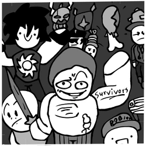
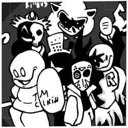
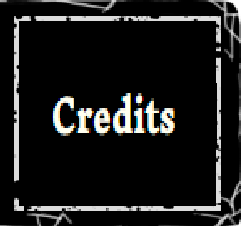

-



Forsaken is a is a multiplayer asymmetric horror roblox game created by Souldrivenlove. The game's playstyle consists in (up to) 8 survivors trying to win against one killer by staling time (4 minutes).Objectives are the main task to complete in a round.
There is currently only one objective in the game after the rework of generators.Generators are found on every map, with the number of generators being max 5. When working on the generator, the player is forced into a minigame where dots of matching color and number must be connected to each other in a grid in order to complete the minigame.For each puzzle completed, the timer will go down by 4 seconds, no matter how many generators there are in total.